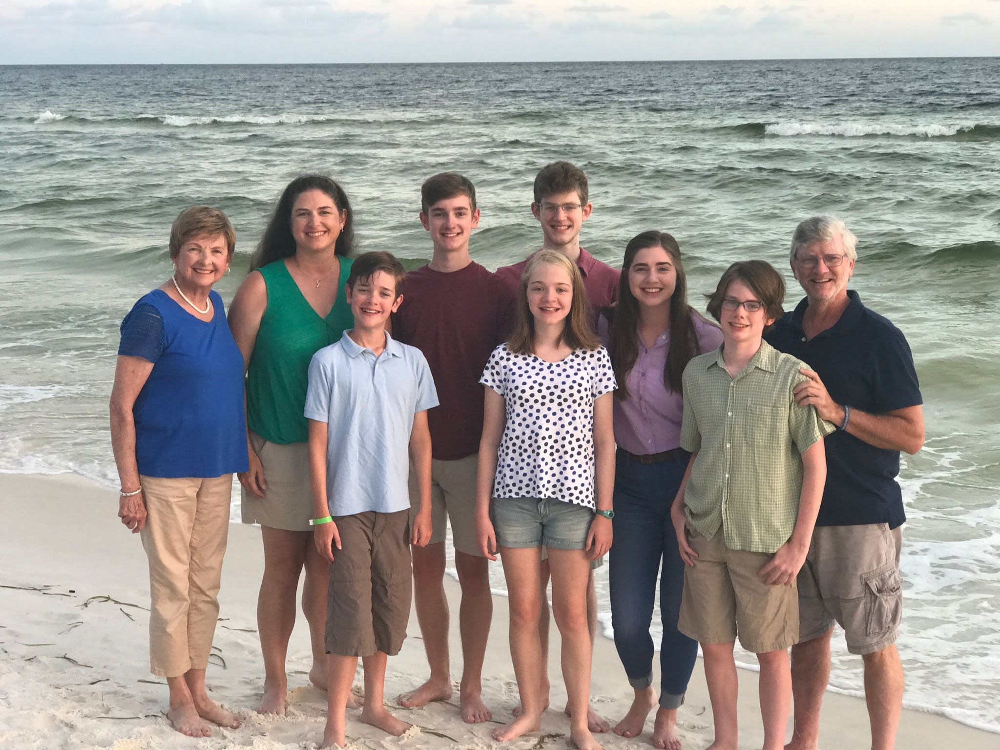
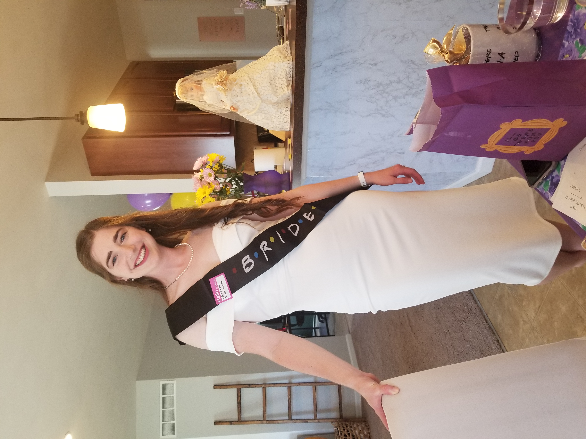
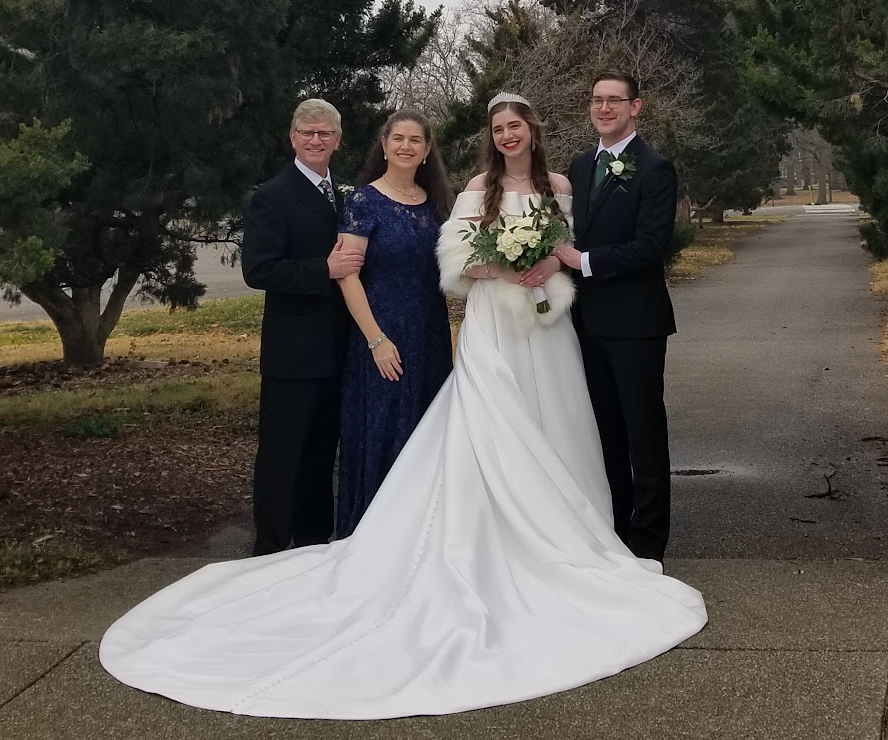

The Ryan Family was created when Linda Ryan married Patrick Ryan during the Great Flood of '93. Linda and Patrick went on to have 6 wonderful children: Brenna, Conor, Ronan and Kaylee ('The Twins'), Aidan and Declan.

"The Ryan Family in Panama City Beach Florida."
"All About the Kids!"
The Ryan Kids range in age from 15 to 26 years of age. Collectively, they have interests and talents in a multitude of areas, such as: theatre, music, sports, medicine, dance, art, and more! Linda and Patrick have enjoyed raising these wonderful human beings and are so proud of the kind, smart and talented young people they are becoming!
Brenna
Brenna Ryan is the oldest at 26 years, and is currently pursuing her medical degree through the Des Moines University College of Osteopathic Medicine in Iowa. She plans to become an Ob/Gyn and is also an enlisted officer in Army. Brenna enjoys singing, music, playing the violin, and has 2 boxer-mix dogs nameed George and Sophie. Brenna recently had her wedding celebration with her new husband, Sam. We are delighted to welcome him to our family, as well.

"Brenna's Friends-themed Bridal Shower."

"Patrick, Linda, Brenna and Sam at the wedding."
Return to Top of Page
Conor
Conor is the second oldes at 22 years and is currently attending the Missouri University of Science and Technology. He is pursuing a degree in engineering. Conor is an avid gamer and also plays the violin!
Ronan is the older twin and is 19 years old. He is a dancer and performer, pursuing his BFA in Dance with a Ballet Concentration at Point Park University in Pittsburgh, PA. A lifelong performer, Ronan has appeared in numberous productions at The MUNY, The Repertory Theatre, and STAGES. He will actually be appearing in "A Chorus Line" this Fall with STAGES St. Louis from Sept. 9th - Oct. 9th, 2022!
Kaylee Ryan is the younger twin, also 19 years old. Kaylee has also spent many years as an actress and singer, having appeared as Helen Keller in "The Miracle Worker" as well as the lead role of Scout in The Repertory Theatre's production of "To Kill a Mockingbird" (alongside her twin brother.) Kaylee is an amazing artist and is currently pursuing her Double BFA in Animation and Drawing at the Cleveland Institute of Art in Ohio. This summer, Kaylee is busy working as a caricature artist at 6 Flags and Union Station!
Aidan Ryan is the 4th child and is 17 years old. He is a senior this year and is looking to pursue a degree in environmental science/engineering in college. Aidan is active in theatre, improv, gaming, and plays the violin. He also works as a Scooper at Oberweis Dairy!
Declan Ryan is the youngest and will turn 15 years old this summer! Declan is extremely active and is constantly busy. He studies all styles of dance and is in 2 student dance companies. He also studies voice, cello, and swims. Declan recently play the title role of Billy in COCA's production of "Billy Elliot." He plans to pursue a double major in dance and pre-med, with the goal of becoming a doctor.